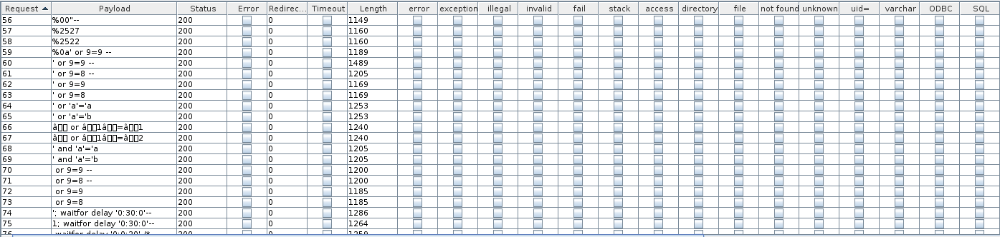
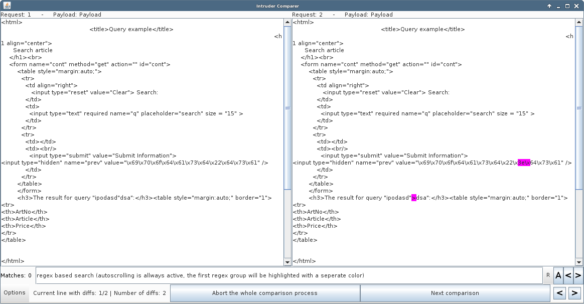
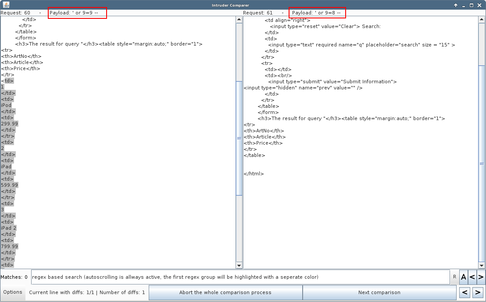

The intruder comparer is useful to automatically compare multiple responses (e.g. when doing a manual injection with intruder). The main feature here is the ability to exclude some parts of the response representing just a stupid reflection of the attack payloads (ignoring xss kind of attacks for now) and focusing on other differences (missing/additional content, error messages, ...).
For this demonstration let's use the following application:

As can be seen, this page always returns the query string once visible and also as a hidden parameter. So, XSS might be possible, but we are not interested in the obvious stuff right now. Given the response, it might be worth looking for a SQLi or LDAP injection, or... so let's fire up the intruder with some payloads and have a deeper look:
We see that all responses differ in size (not only a few bytes sometimes) and that none of the interesting grep strings match. When examining a POST request with e.g. 15 parameters and a payload list with about 100 payloads, this results in 1500 responses we either must discard or somehow examine manually. This is where Intruder Comparer comes into play.
So the first step in using the Intruder Comparer would be selecting all messages (must be at least 2), right-click and start "Intruder Compare" (it's just a name; it can also be used on e.g. proxy items). Afterwards, the following window should appear:

The default configuration should be fine for a first run, so let's see what we get by clicking the start button:
The left hand is the first response and the right hand the second. We see that there are 2 modifications on the right hand, resulting from a payload with additional characters than the one before. As mentioned before, the response reflects the query string and as we ignore for now the potential XSS, let's try to strip this reflection and focus on other differing behaviour. To accomplish this task, let's abort the complete comparison (the button at the middle bottom) and select a response, right-click and use "Send to Regex Test". Afterwards, again select the relevant intruder messages, and again choose "Intruder Compare":

This time, we use the textbox in the "Intruder Comparer Options" window and start to define a regex which should only match on the reflected string using regex groups (note the (.*?) at the end; the regex are PCRE). As can be seen, there are 2 different colors used, the orange color is the relevant one, as this part will be stripped. By defining a second regex for the second reflection by simply adding a second regex with the pipe ( | ), we get the regex:
<input type="hidden" name="prev" value="(.*?)"|<h3>The result for query "(.*?)</h3>
If we now start the comparer again, most of the responses should be skipped, leading to differences like the following:
Note: The intruder comparer can also be used in combination with Response Unpacking. Just configure response unpacking and afterwards select the respective checkbox in the intruder comparer selection window: